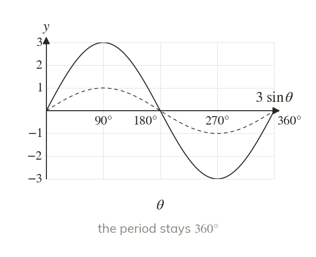
A number outside acts vertically
The graph of is stretched vertically by scale factor so it runs from to
Adding a number outside, as in moves the graph up.
The transformations of chapter work on trigonometric graphs unchanged, so a period, a height or a shift can be read straight from an equation. Reading the constants back from a sketch is a standard exam step, and these graphs return when chapter solves equations such as
Work down the page at your own pace. Write every answer in your book first, then click to check it.
Read each card, then follow the worked examples one step at a time.

The graph of is stretched vertically by scale factor so it runs from to
Adding a number outside, as in moves the graph up.
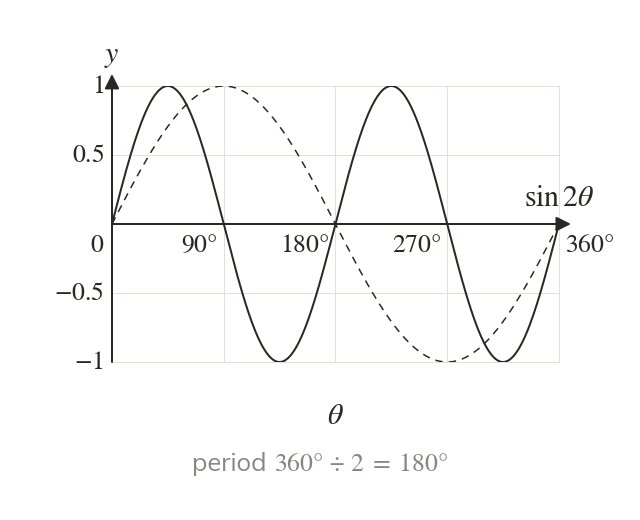
The graph of is stretched horizontally by scale factor ½, so the period is Adding a number inside, as in moves the graph left.
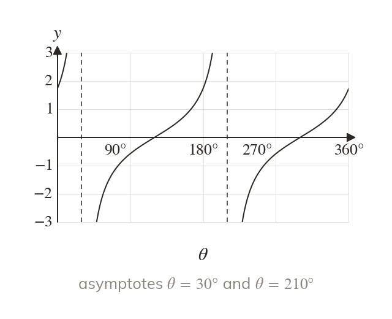
The graph of is moved to the left. Its asymptotes move too, from to and from to
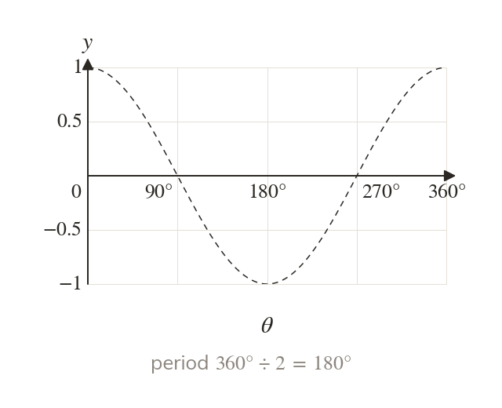
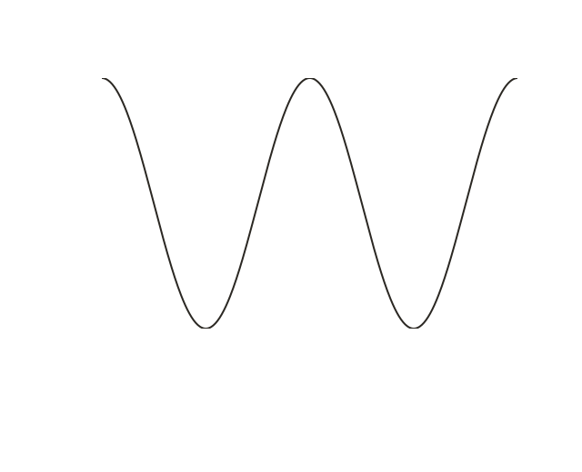
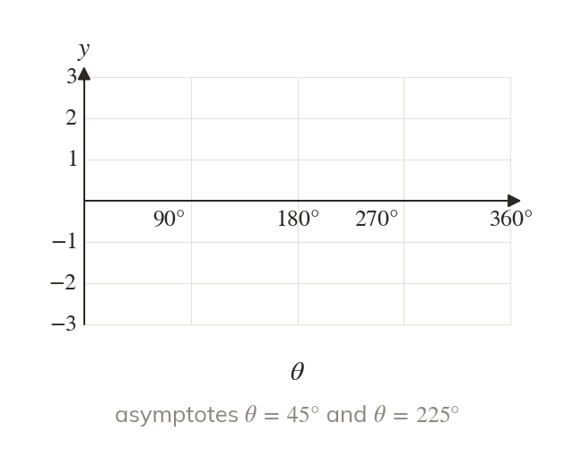
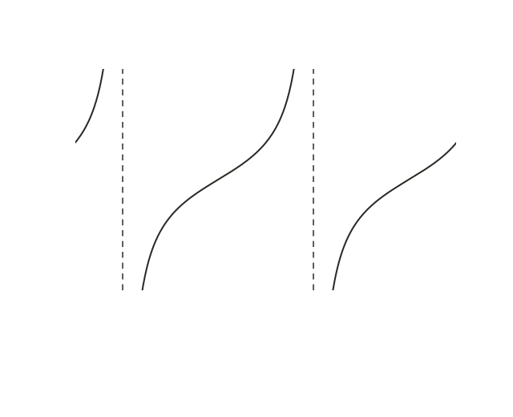
Pick an answer. If it's wrong, the feedback tells you which mistake it was.
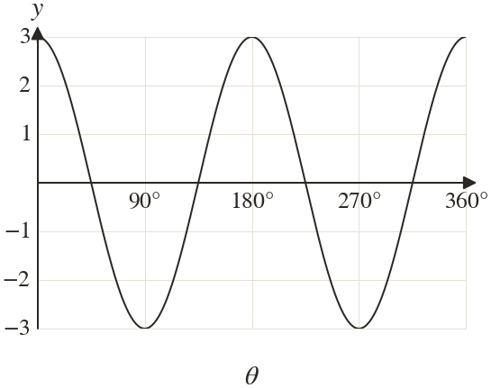
Read each card, then follow the worked examples one step at a time.
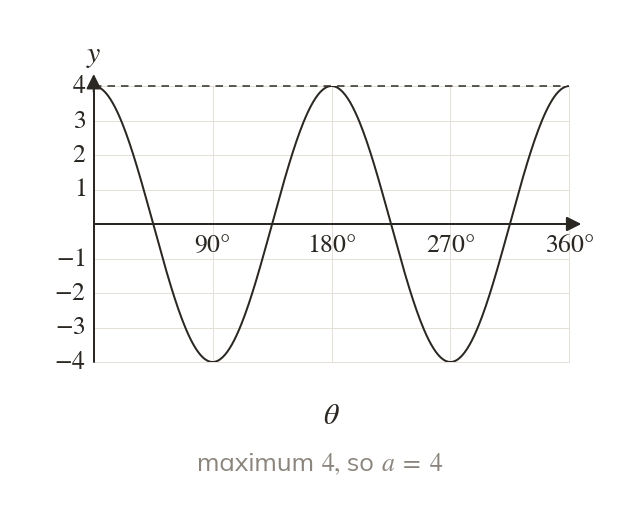
The graph of or runs from to a. So a is the maximum value on the sketch.
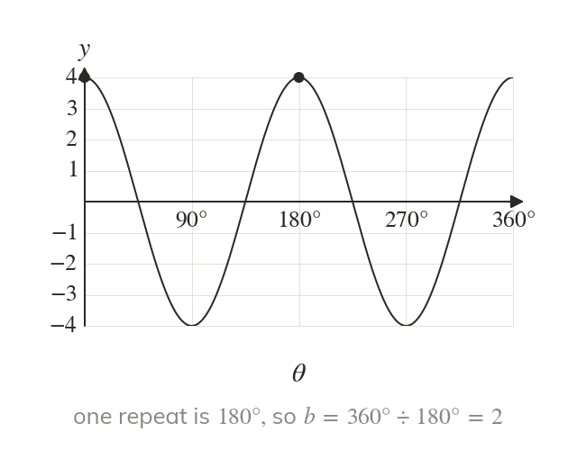
One repeat of takes So is divided by the period read from the sketch.
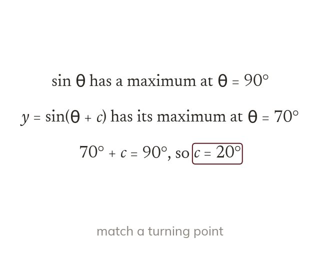
The zeros and turning points of are known. Match one of them to the sketch to find the shift in
Pick an answer. If it's wrong, the feedback tells you which mistake it was.
Finished? Next lesson: 9.1 The Cosine Rule.
For each skill, tap the one that is true for you today. Your Revise pages start with anything you mark Not yet.
Your ratings are saved on this device only.
Log in, then search for a code to practise that skill.